정규
화요일 18:00~
1학년과 2학년, 두 학년의 기말 시험지 52문항 전부를 교재 원문과 한 문장씩 대조했습니다.
결과는 두 학년이 같았습니다 — 원문 그대로 나온 건 10점 안팎. 나머지는 고쳐 쓰거나, 새로 쓴 지문이었습니다.
두 학년 모두 시험 범위 안에서 출제됐습니다. 그런데 지문이 원문 그대로 나오지 않았습니다. 문장을 고치고, 어법 장치를 심고, 지문을 아예 새로 썼습니다. 열심히 외운 학생일수록 낯선 시험지를 만난 이유입니다.
두 학년 시험지에서 반복적으로 확인되는 출제 코드는 세 가지입니다.
26문항 전부를 교과서(능률 민병천)와 올림포스 원문에 대조했습니다.
어느 지문이 어디서 왔고, 무엇이 어떻게 바뀌었는지까지 확인한 기록입니다.
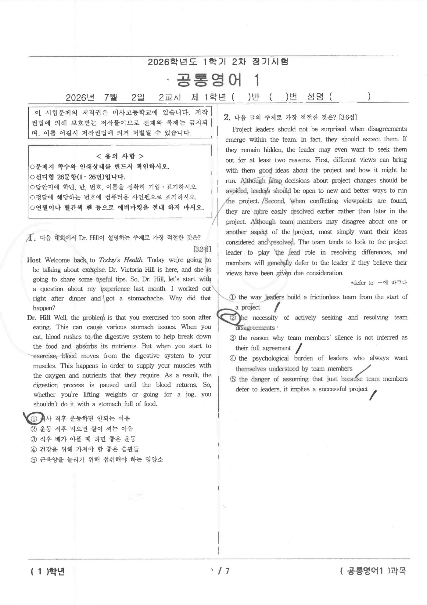
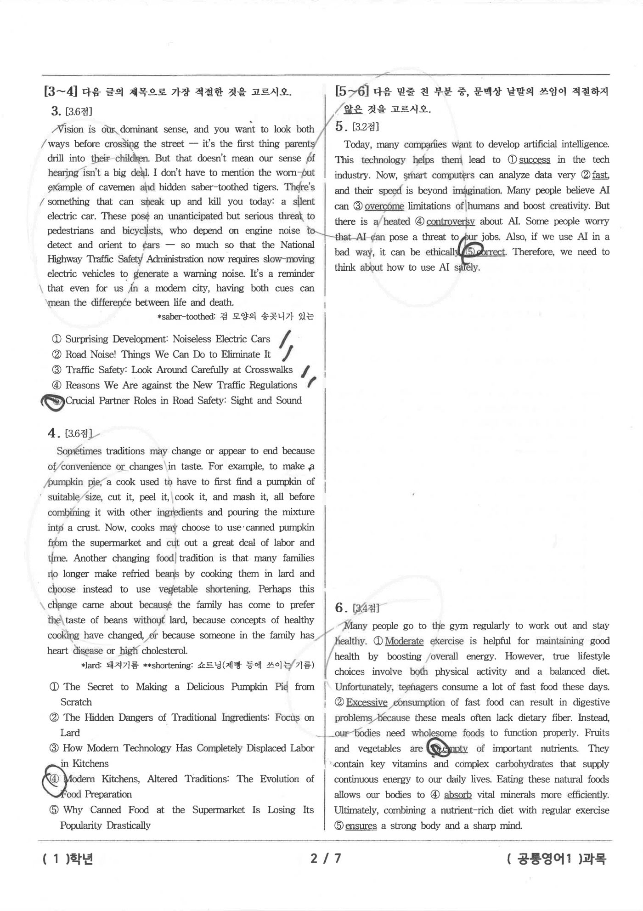
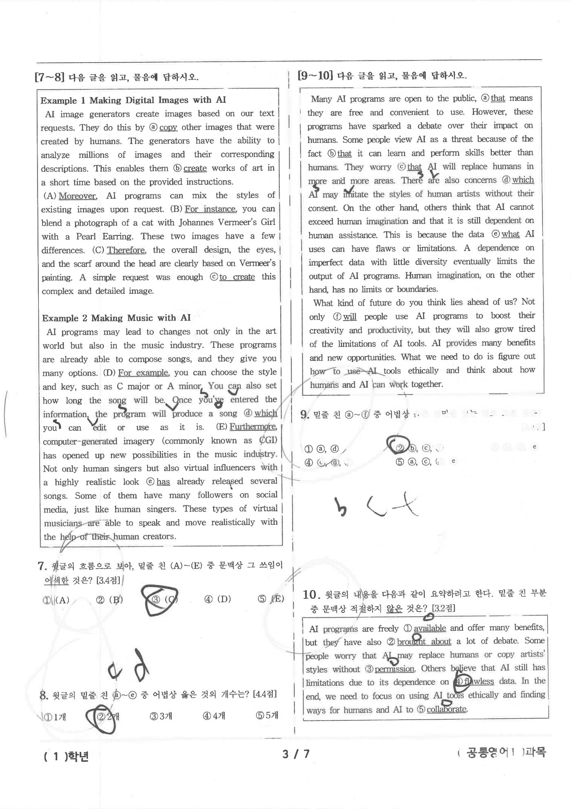
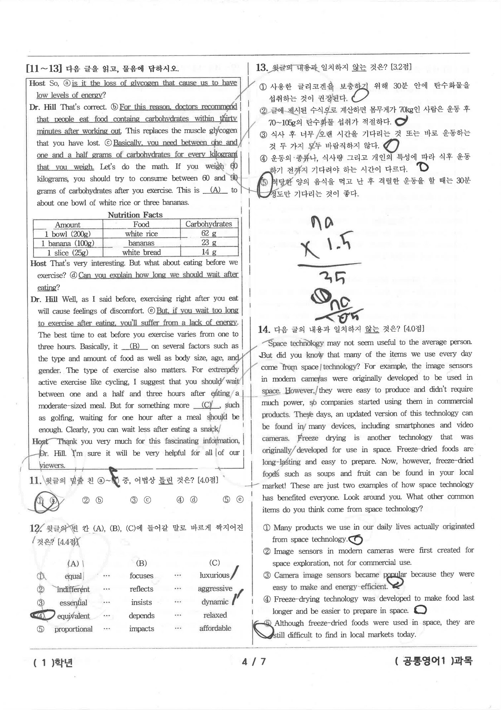
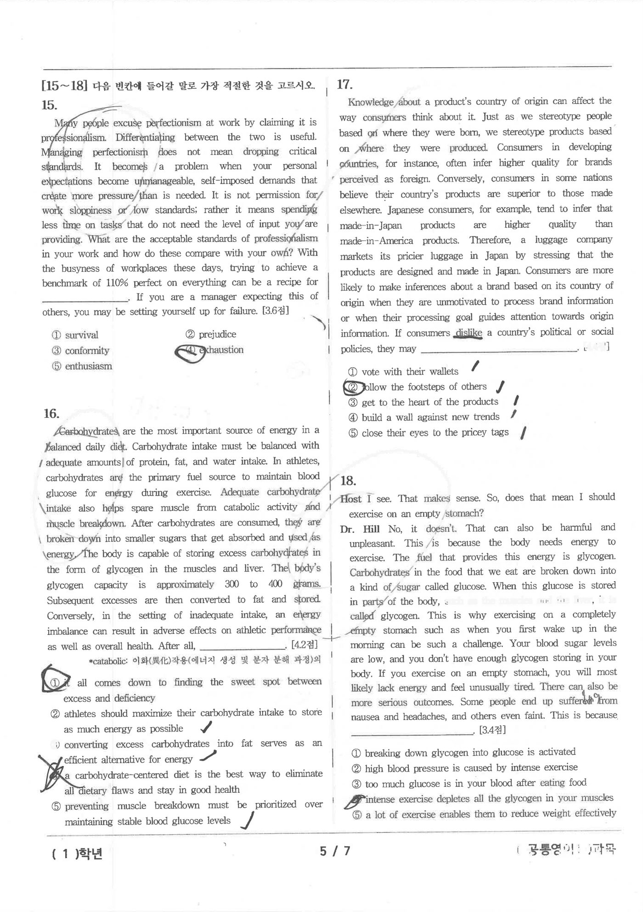
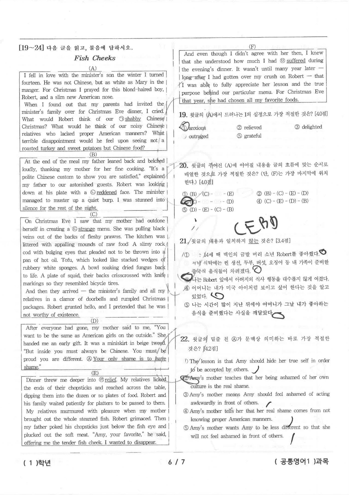
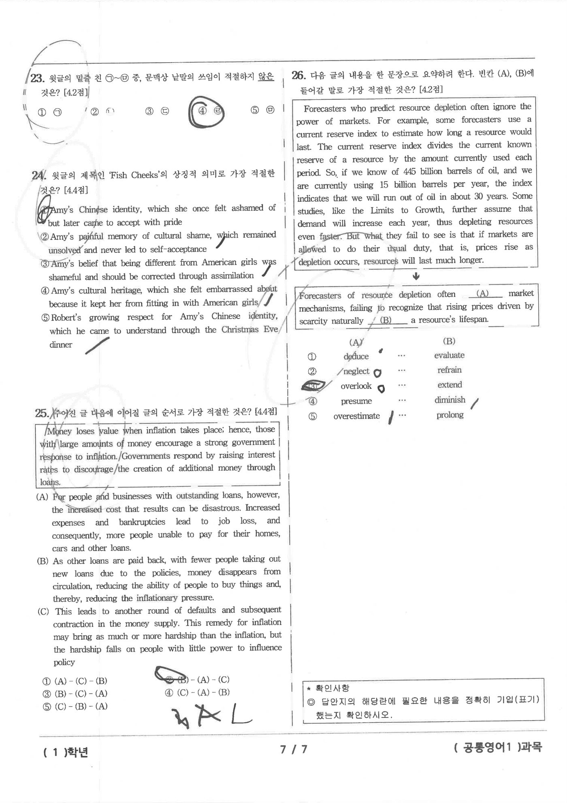
전 문항의 배점·출처를 교재 원문과 축자 대조하고, 검수진 교차 검산을 거친 표입니다.
| 번호 | 배점 | 난이도 | 유형 | 물어보는 개념 | 출제 포인트 · 함정 | 어디서 왔나 |
|---|---|---|---|---|---|---|
| 1 | 3.2 | 기본 | 대화문 주제 | 인과 관계 독해 | 식후 운동 → 혈류 이동 → 소화 정지의 인과 사슬 | 교과서 3과 본문 대담 — 거의 그대로 |
| 2 | 3.6 | 표준 | 주제 | 글의 구조 요약 | '이견은 찾아내 해결하라' — 두 가지 이유 구조 | 올림포스 12과 — 원문 그대로 |
| 3 | 3.6 | 표준 | 제목 | 핵심 구조 포착 | '시각+청각 두 단서 모두'의 이중 구조 | 올림포스 12과 — 원문 그대로 |
| 4 | 3.6 | 기본 | 제목 | 사례의 일반화 | 두 음식 사례 → '전통의 변화'로 묶기 | 올림포스 12과 — 원문 그대로 |
| 5 | 3.2 | 기본 | 어휘(부적절) | 문맥 모순 포착 | 'AI를 나쁘게 쓰면 윤리적으로 옳다'의 모순 | 교과서 4과 소재 — 신설 지문 |
| 6 | 3.4 | 기본 | 어휘(부적절) | 문맥 모순 포착 | 과일·채소가 영양소가 '비어 있다'는 모순 | 교과서 3과 소재 — 신설 지문 |
| 7 | 3.4 | 표준 | 연결사 | 역접·인과 판별 | 역접 자리의 Therefore — For instance는 정상 미끼 | 교과서 4과 — 연결사 교체 |
| 8 | 4.4 | 까다로움 | 어법(개수) | 수일치·관계대명사 | not only A but also B 수일치, 목적격 which는 옳음 | 교과서 4과 — 재구성+장치 |
| 9 | 4.4 | 까다로움 | 어법(있는 대로) | 관계사·도치 | 콤마+that 불가, 동격 that, what, not only 도치 | 교과서 4과 — 재구성+장치 |
| 10 | 3.2 | 기본 | 요약문 어휘 | 핵심어 반전 포착 | AI 한계=불완전한 데이터 — flawless의 반전 | 교과서 4과 소재 — 요약문 신설 |
| 11 | 4.0 | 표준 | 어법 | 강조구문·가정법 현재 | it~that 강조, recommend that+동사원형 | 교과서 3과 — 같은 지문 세트 |
| 12 | 4.4 | 표준 | 빈칸(어휘 짝) | 문맥 유의어 | equal→equivalent, casual→relaxed — 세 칸 동시 정답 | 교과서 3과 — 단어를 빈칸·유의어로 |
| 13 | 3.2 | 표준 | 내용 불일치 | 수치 정보 대조 | 격렬 운동은 1.5~3시간 대기 — '30분' 수치 함정 | 교과서 3과 — 같은 지문 세트 |
| 14 | 4.0 | 표준 | 내용 불일치 | 세부 정보 대조 | 동결건조식품은 이제 마트에 있다 — 정반대 선지 | 범위 교재에서 확인 안 됨 |
| 15 | 3.6 | 표준 | 빈칸추론 | 결론어 동의 전환 | burnout을 exhaustion으로 바꾼 정답 | 올림포스 15과 — 정답만 동의어 교체 |
| 16 | 4.2 | 표준 | 빈칸추론 | 논지의 결론화 | 과잉도 부족도 아닌 '균형' — 결론 문장은 신설 | 올림포스 15과 — 결론 빈칸 신설 |
| 17 | 4.4 | 까다로움 | 빈칸추론 | 관용표현 해석 | '부정적 반응'을 vote with their wallets로 번역 | 올림포스 15과 — 선지를 관용구로 |
| 18 | 3.4 | 기본 | 빈칸(대화문) | 인과 관계 | 빈속 운동의 피로 = 글리코겐 소진(depletes) | 교과서 3과 — 거의 그대로 |
| 19 | 4.0 | 기본 | 심경 | 정서 추론 | 'I cried / terrible disappointment' → 불안 | 외부 수필(Fish Cheeks) 세트 |
| 20 | 4.0 | 표준 | 순서 배열 | 시간 단서 추적 | 크리스마스이브의 시간 흐름으로 문단 복원 | 외부 수필 세트 |
| 21 | 3.4 | 기본 | 내용 불일치 | 세부 정보 대조 | '충격받아 침묵'했다는 원문과 선지 대조 | 외부 수필 세트 |
| 22 | 4.2 | 까다로움 | 함축 의미 | 문장의 함의 | 'Your only shame is to have shame'의 뜻 | 외부 수필 세트 |
| 23 | 4.2 | 까다로움 | 어휘(부적절) | 감정선 독해 | 수치심→자부심의 감정선을 뒤집는 낱말 | 외부 수필 세트 |
| 24 | 4.4 | 표준 | 제목의 상징 | 상징 해석 | 생선 볼살=정체성, '결말의 수용'까지 담은 선지 | 외부 수필 세트 |
| 25 | 4.4 | 까다로움 | 순서 배열 | 지시어·역접 연결 | however와 This leads to의 연결 추적 | 올림포스 15과 — 절단+연결어 보강 |
| 26 | 4.2 | 표준 | 요약문 완성 | 패러프레이즈 | ignore=overlook, last longer=extend 매칭 | 올림포스 12과 — 요약문 신설 |
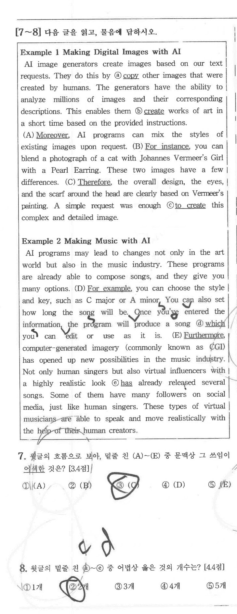
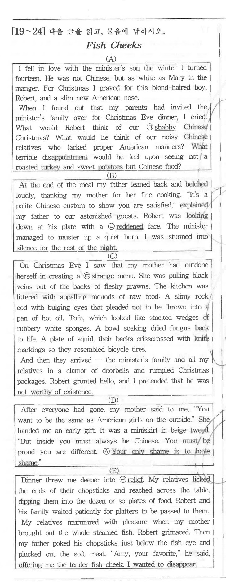
'교과서 통암기'는 8·9번의 which 앞에서, '올림포스 회독'은 결론 신설·관용구 선지 앞에서, '외부 지문 포기'는 24.2점 앞에서 각각 멈춥니다. 이번 시험이 요구한 건 다른 종류의 훈련입니다.
26문항 전부를 교과서(YBM)와 EBS 수능특강 Light 원문에 대조했습니다.
어느 지문이 어디서 왔고, 무엇이 어떻게 바뀌었는지까지 확인한 기록입니다.
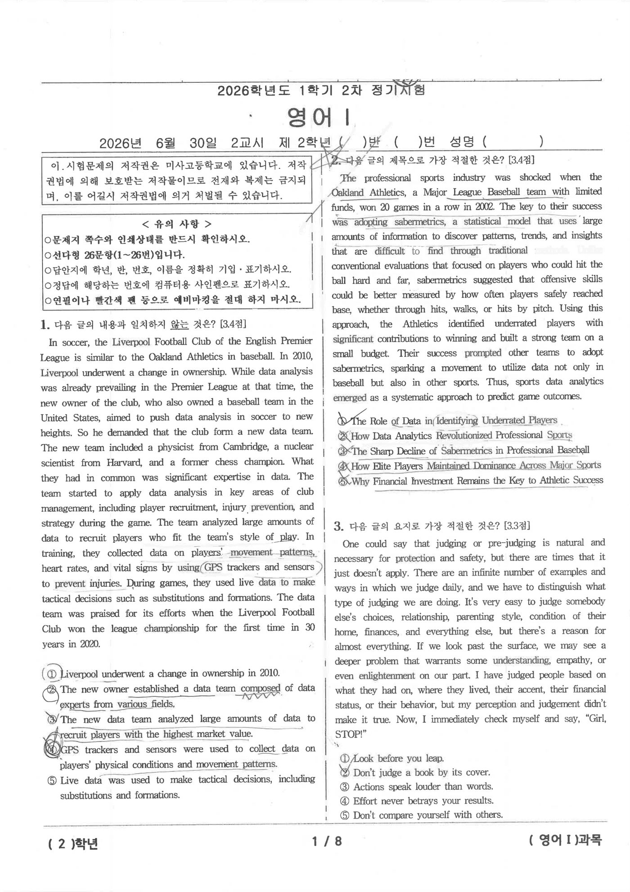
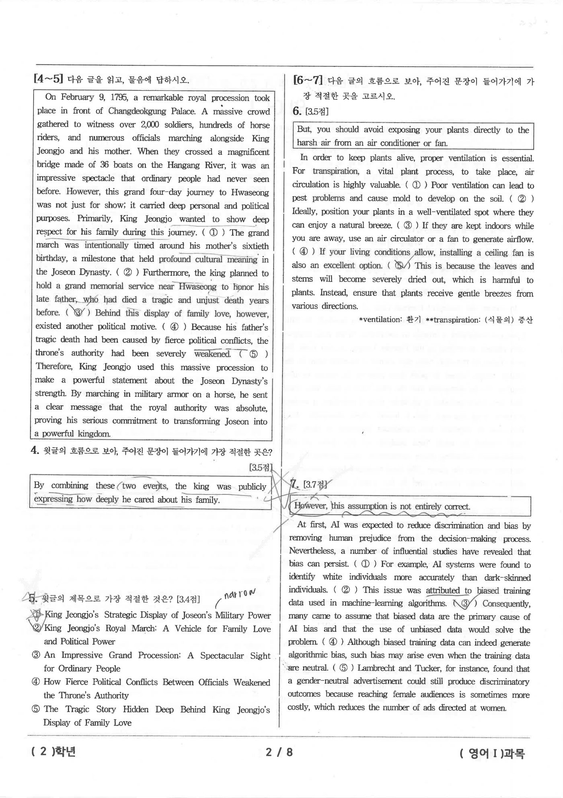
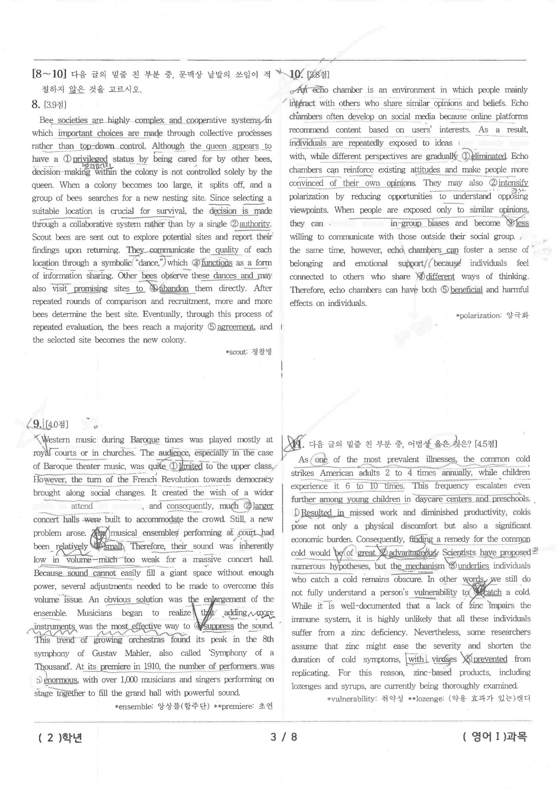
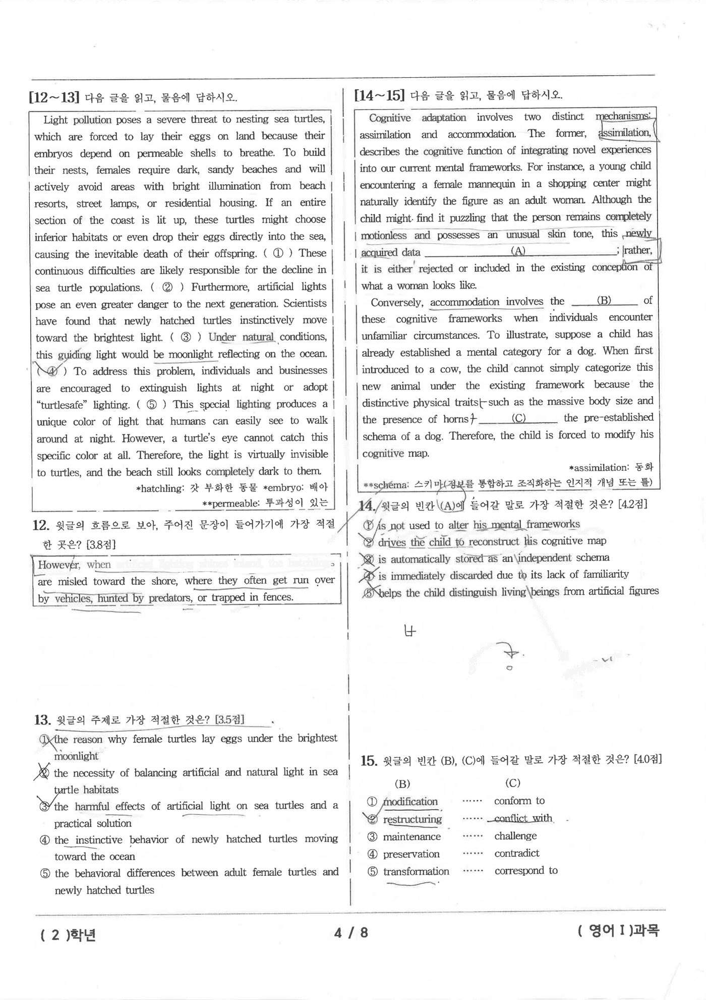
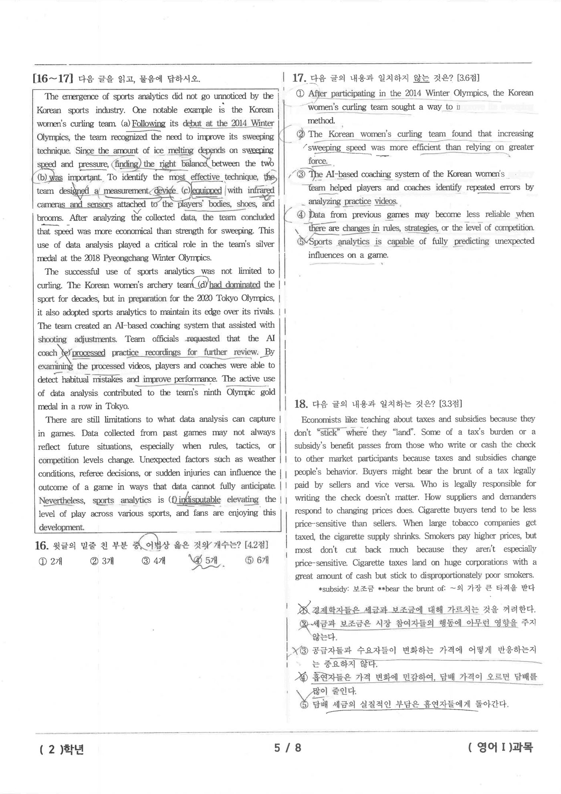
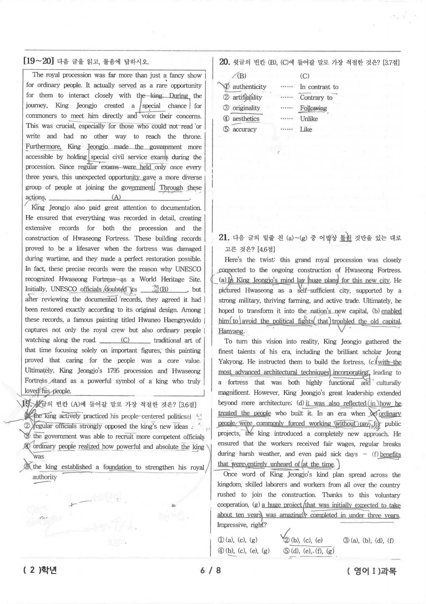
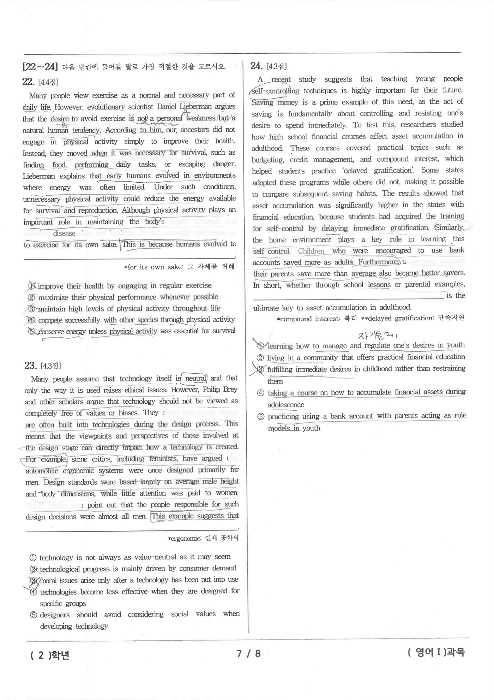
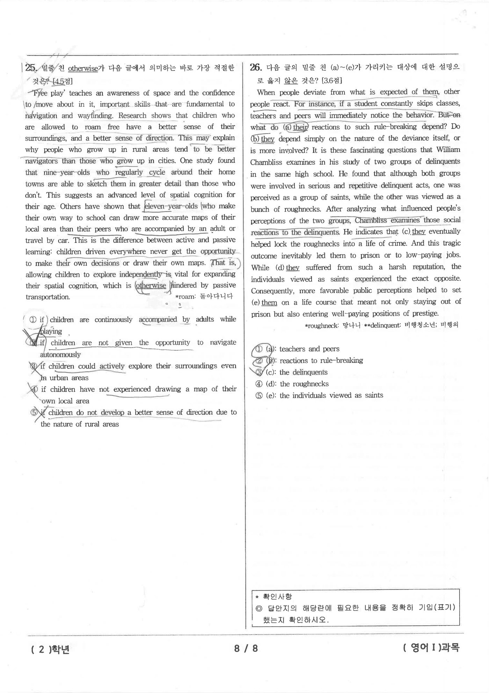
전 문항의 배점·출처를 교재 원문과 축자 대조하고, 검수진 교차 검산을 거친 표입니다.
| 번호 | 배점 | 난이도 | 유형 | 물어보는 개념 | 출제 포인트 · 함정 | 어디서 왔나 |
|---|---|---|---|---|---|---|
| 1 | 3.4 | 기본 | 내용 불일치 | 세부 기준 대조 | 영입 기준은 '팀 스타일 적합' — '시장 가치' 왜곡 선지 | 교과서 3과 — 그대로 |
| 2 | 3.4 | 표준 | 제목 | 포괄 범위 판단 | 야구 사례 → 스포츠 전반의 데이터 혁명 — 좁은 제목 함정 | 교과서 3과 — 문장 단위 재서술 |
| 3 | 3.3 | 표준 | 요지(속담) | 요지의 속담 번역 | 겉모습 판단의 오류 → Don't judge a book by its cover | 수특라이트 4강 — 그대로 |
| 4 | 3.5 | 까다로움 | 문장삽입 | 지시어 추적 | 'these two events'가 회갑연+추모제를 다 받는 자리 | 교과서 4과 — 전면 재구성 |
| 5 | 3.4 | 표준 | 제목 | 두 축의 포괄 | 가족애+정치적 의도를 다 품는 제목 | 교과서 4과 — 같은 지문 세트 |
| 6 | 3.5 | 표준 | 문장삽입 | 역접+지시 연결 | But 삽입문 뒤 'This is because'의 지시 대상 | 수특라이트 12강 — 전면 재구성 |
| 7 | 3.7 | 까다로움 | 문장삽입 | 통념-반박 흐름 | 반박문은 통념이 '완성된 뒤'에야 들어감 | 수특라이트 9강 — 전면 재구성 |
| 8 | 3.9 | 표준 | 어휘(부적절) | 문맥 방향성 | 유망지를 '확인'할 자리의 abandon | 수특라이트 12강 — 전면 재구성 |
| 9 | 4.0 | 까다로움 | 어휘(부적절) | 문맥 방향성 | 소리를 '키울' 자리의 suppress — 새로 만든 문장에 심음 | 수특라이트 12강 — 전면 재구성 |
| 10 | 3.8 | 표준 | 어휘(부적절) | 어휘 호응 | share와 충돌하는 different(→similar) | 수특라이트 9강 — 전면 재구성 |
| 11 | 4.5 | 킬러 | 어법(옳은 것) | with+O+분사 | 4개가 전부 오류, with 분사구문 하나만 옳음 | 수특라이트 9강 — 전면 재구성 |
| 12 | 3.8 | 표준 | 문장삽입 | 자연광·인공광 대비 | 달빛 설명이 끝난 뒤의 역접 However | 수특라이트 13강 — 전면 재구성 |
| 13 | 3.5 | 기본 | 주제 | 포괄 범위 판단 | 피해+실질적 해결책 두 축을 다 담은 선지 | 수특라이트 13강 — 같은 지문 세트 |
| 14 | 4.2 | 까다로움 | 빈칸(A) | 동화(assimilation) 개념 | 세미콜론+rather 병렬 → '틀을 바꾸지 않는다' | 수특라이트 12강 — 전면 재구성 |
| 15 | 4.0 | 표준 | 빈칸(B·C) | 조절(accommodation) 개념 | 재구조화+기존 틀과의 충돌 — 쌍으로 판정 | 수특라이트 12강 — 같은 지문 세트 |
| 16 | 4.2 | 킬러 | 어법(개수) | 가정법 현재·부사 자리 | 6개 독립 판정 — requested that+원형, indisputably | 교과서 3과 — 전면 재구성 |
| 17 | 3.6 | 기본 | 내용 불일치 | 극성 반전 포착 | cannot fully anticipate ↔ capable of fully predicting | 교과서 3과 — 같은 지문 세트 |
| 18 | 3.3 | 표준 | 내용 일치 | 조세 귀착 논리 | 세금은 법적 납부자가 아니라 덜 움직이는 쪽에 남는다 | 수특라이트 4강 — 그대로 |
| 19 | 3.6 | 까다로움 | 빈칸(요지) | 요지의 추상화 | 행차 에피소드들의 공통 요지 = 백성 중심 정치 | 교과서 4과 — 전면 재구성 |
| 20 | 3.7 | 표준 | 빈칸(어휘+연결어) | authenticity·대조 | 유네스코가 의심한 건 '진품성' — 두 칸 동시 판정 | 교과서 4과 — 같은 지문 세트 |
| 21 | 4.6 | 킬러 | 어법(있는 대로) | 분사구문 태·with 분사 | 7개 독립 판정 — lay 도치 미끼를 옳다고 확신하는가 | 교과서 4과 — 전면 재구성 |
| 22 | 4.4 | 표준 | 빈칸추론 | 통념 vs 필자 주장 | '운동 회피가 본성' → 에너지 보존으로 추론 | 수특라이트 13강 — 전면 재구성 |
| 23 | 4.3 | 표준 | 빈칸추론 | 가치중립성 반박 | 자동차 설계 사례 → 기술은 중립이 아니다 | 수특라이트 12강 — 문장 단위 재서술 |
| 24 | 4.3 | 까다로움 | 빈칸추론(요약) | 상위 개념화 | 학교·가정 두 사례를 '욕구 조절'로 일반화 | 수특라이트 12강 — 문장 단위 재서술 |
| 25 | 4.5 | 까다로움 | 함축(otherwise) | 가정 조건의 함의 | 밑줄 문장 자체가 출제자가 새로 쓴 문장 | 수특라이트 9강 — 문장 신설 |
| 26 | 3.6 | 표준 | 지칭추론 | 지시 대상 판별 | (c) they는 '비행청소년'이 아니라 '사회적 반응' | 수특라이트 13강 — 문장 단위 재서술 |
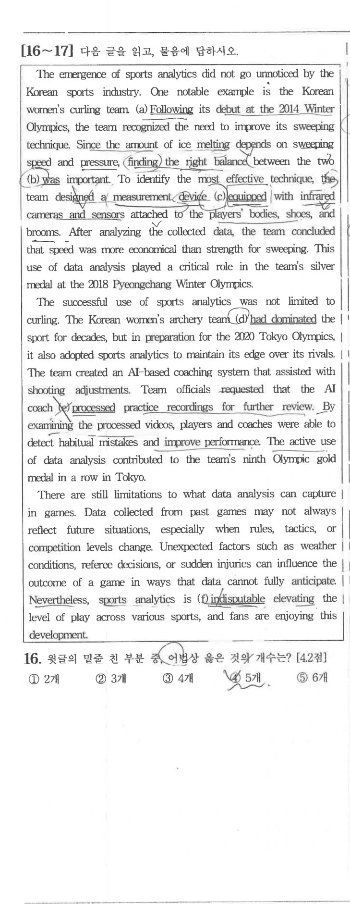
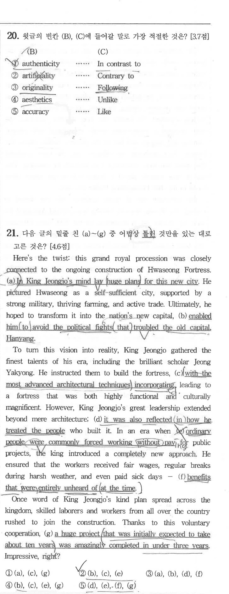
'학교 프린트 복습'과 '수특 해석본 암기'가 통하지 않는 구조였습니다. 원문 그대로는 10점 — 나머지 90점은 다시 쓰인 지문 위에서 겨뤘습니다.
문제 몇 세트를 더 푸는 것으로는 이 시험이 요구한 힘이 길러지지 않습니다. 다올105는 시험의 본질 — 변형 대응력과 공부 밀도 — 를 직접 훈련합니다.
미사고 아이들의 패턴은 비슷합니다 — 평소 강도가 나오지 않으니 내신 때는 단순 암기로 버티고, 정확히 변형된 포인트에서 헷갈립니다. 오르내리는 성적 기복은 거기서 생깁니다. 다올105는 이 뿌리를 시스템으로 잡습니다.